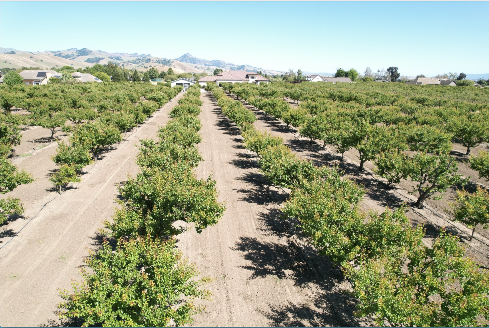
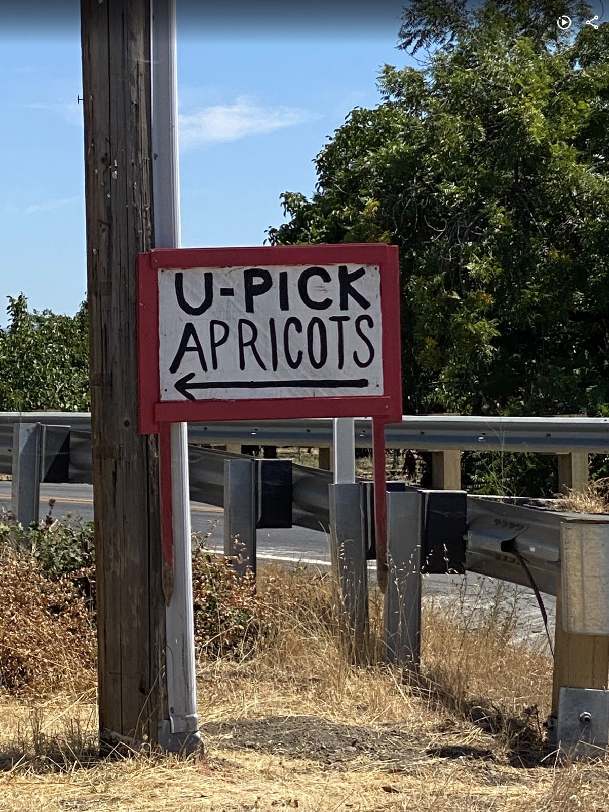
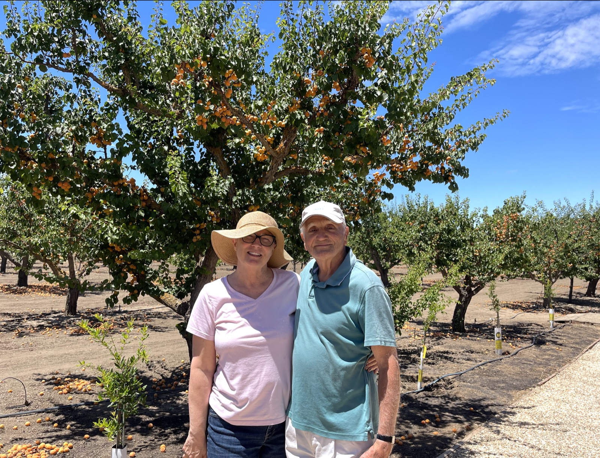
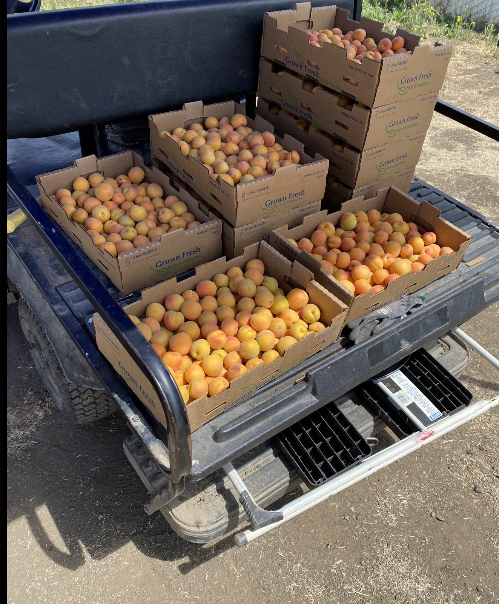
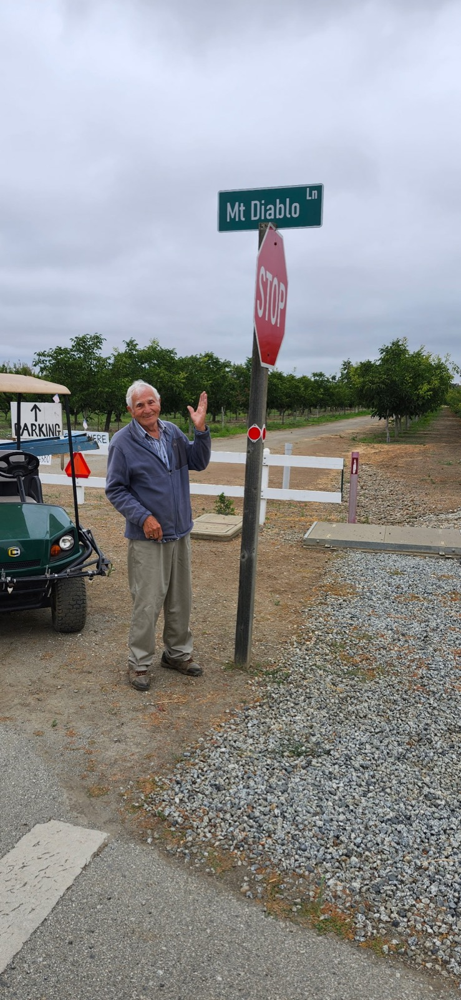
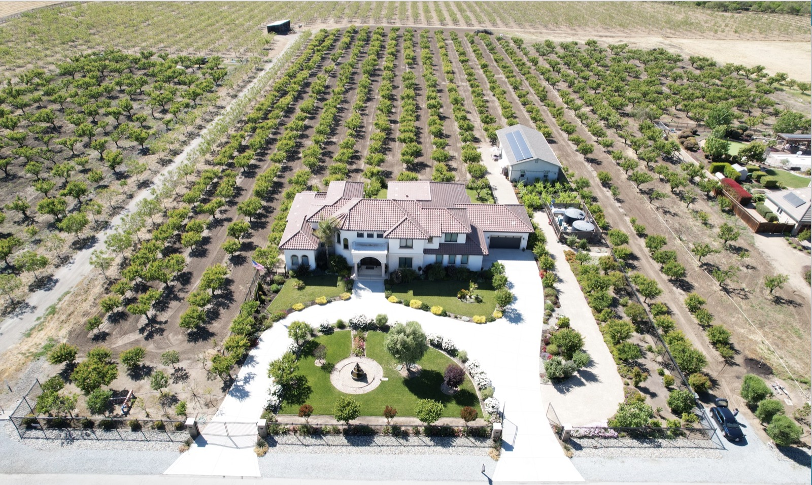

Apricots
U-pick starts July 4th weekend. Bring boxes, hats, and an eye for the ripest golden fruit.

U-Pick season clue
Apricots are xx. U-pick apricots begin July 4th weekend, with ripe fruit hanging in the orchard and boxes ready for taking home.

Meet the growers
Rassai Farms is a family farm with orchard rows, fresh seasonal fruit, and a gathering place for celebrations on the property.

Seasonal fruit
U-pick starts July 4th weekend. Bring boxes, hats, and an eye for the ripest golden fruit.
Sweet black figs are available seasonally as the crop ripens on the farm.
Fruit is picked when the flavor is ready, with seasonal harvests changing through the year.
Green figs are sold fresh from the farm when the trees are producing.
Fragrant quince are sold seasonally from the farm along with apricots and figs.
Walk the Blenheim rows and see the apricots ripening on the trees.



Private events
The property includes a barn and gazebo that can be rented for family gatherings, farm dinners, and special celebrations.
Ask About EventsVisit
Follow Mt Diablo Lane and keep an eye out for the U-Pick Apricots signs near the orchard entrance.